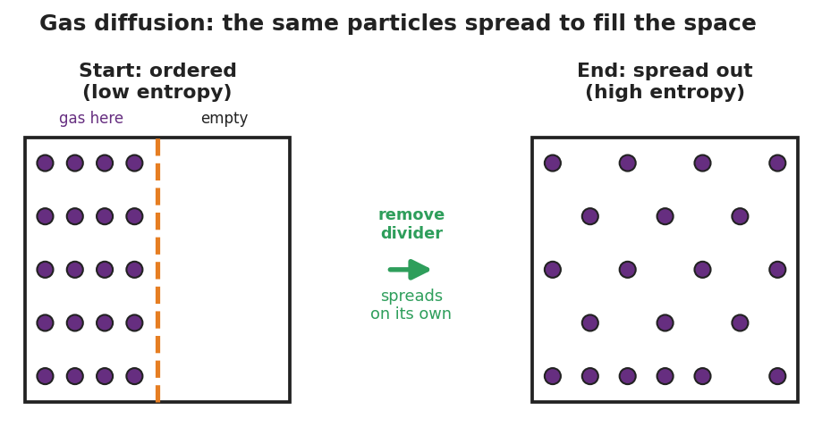

01 Phenomenon
A perfectly tidy bedroom is left alone for a week. With no one trying to mess it up, clothes end up on the floor, papers spread across the desk, and the bed un-makes itself through use. The reverse never happens: a messy room does not tidy itself overnight. The same one-way pattern shows up everywhere — a drop of dye spreads through water and never gathers back into a drop; a hot drink cools to room temperature and never reheats itself; a smell fills a room and never crowds back into its bottle.
02 Driving question
Why do some changes happen all by themselves, while their opposites never do?
03 Notice & wonder
| I notice… | I wonder… |
|---|---|
Turn & Talk #1: A hot drink cools down on its own, but a room-temperature drink never heats itself up. In one sentence: what is the hot drink losing as it cools, and which direction does that lost thing always travel?
04 Initial model
Before your teacher names anything, write your best guess. List three changes that happen all by themselves (no one forces them), and for each, write what its opposite would be and whether that opposite ever happens on its own.
| A change that happens on its own | Its opposite | Does the opposite happen on its own? (yes/no) |
|---|---|---|
What do your three “happens on its own” changes seem to have in common? _______________________________________________
05 Investigate
Part 1 — Entropy demonstration stations
Observe each station your teacher sets up. For each one, record what you see and answer the prediction question.

| Station | What I observed | Did the spread-out / mixed state happen on its own? (yes/no) |
|---|---|---|
| 1 · Gas diffusion (smell spreading) | ||
| 2 · Dissolving (color spreading, no stirring) | ||
| 3 · Mixing (two colors combined) |
Prediction question: Will any of these three ever reverse on its own — the smell crowding back into the bottle, the color un-spreading, the two colors un-mixing? Explain.
Part 2 — Spontaneity card sort
Sort each process card into one of the two columns. Then write a one-line reason: does it release or absorb energy, and does it make things more or less disordered?
| Process | Pile: happens on its own / needs to be forced | Energy: released or absorbed? · Disorder: more or less? |
|---|---|---|
| Ice melting at room temperature | ||
| Water freezing inside a freezer | ||
| Wood burning | ||
| A phone battery charging | ||
| Iron rusting over years | ||
| A drop of dye spreading in water | ||
| A ball rolling downhill | ||
| A ball rolling uphill |
Key question: Two of your cards are ice melting and water freezing — opposite changes. Both happen on their own, but not in the same place. What is different about the room each one needs?
06 Make it make sense
For each process below, (i) decide whether it is spontaneous (happens on its own) or non-spontaneous (must be forced), and (ii) explain using the two factors: is energy released or absorbed, and does disorder (entropy) increase or decrease? These are the same kinds of processes you sorted in the Investigation — confirm your reasoning here.
A drop of food coloring spreads through a glass of still water.
- Spontaneous or non-spontaneous? _______________________________________________
- Entropy (disorder) increases or decreases? _______________________________________________
- Explain why it happens on its own: _______________________________________________
A phone battery charges while plugged into the wall.
- Spontaneous or non-spontaneous? _______________________________________________
- What has to be supplied to make it happen? _______________________________________________
- Which direction (charging or discharging) is the spontaneous one? _______________________________________________
A hot cup of cocoa cools down to room temperature.
- Spontaneous or non-spontaneous? _______________________________________________
- Energy released or absorbed by the cocoa? _______________________________________________
- Why does the cocoa never reheat itself on its own? _______________________________________________
07 Key vocabulary
- spontaneous
- describing a process that proceeds on its own, without continuous outside help; spontaneous refers to direction, not speed (a spontaneous process can be very slow, like rusting); favored by releasing energy and/or increasing disorder
- enthalpy
- the heat content of a system; a process that releases energy to the surroundings (exothermic, ΔH < 0) has an enthalpy change that favors spontaneity, while one that absorbs energy (endothermic, ΔH > 0) does not
- entropy
- a measure of the disorder, randomness, or spread-out-ness of a system; nature tends toward higher entropy because disordered arrangements vastly outnumber ordered ones, so an increase in entropy (ΔS > 0) favors a spontaneous change
Use each term in a sentence about today’s phenomenon, stations, or card sort. Do not copy the definition — describe something you actually observed or sorted.
spontaneous: _______________________________________________ _______________________________________________
enthalpy: _______________________________________________ _______________________________________________
entropy: _______________________________________________ _______________________________________________
08 Revise your model
Return to your Initial Model and your sorted cards.
- Pick two of your card-sort processes. For each, label the energy factor (released or absorbed) and the entropy factor (more or less disorder).
Process 1: _________________ — energy: __________ · entropy: __________ Process 2: _________________ — energy: __________ · entropy: __________
- Place those two processes onto the four-corner grid your teacher projected. Which corner does each land in?
Process 1 corner: _______________ Process 2 corner: _______________
Then finish this Because / But / So sentence:
A messy room forms on its own, but a tidy room never does, because __________________________________________, but __________________________________________, so __________________________________________.
09 Exit ticket
(a) A sealed bottle of perfume is opened in the corner of a room, and soon the whole room smells of it. Is this spontaneous? Name the entropy (disorder) evidence.
(b) Salt dissolving in water both increases disorder AND slightly cools the water (it absorbs a little energy). Using the two-factor reasoning, explain why dissolving can still be spontaneous even though it absorbs energy.
(c) In one sentence, explain why a melted ice cube never re-freezes on its own in a warm room. Use the word energy or entropy.
10 Explore further
- Entropy demonstration stations (Explore): Set up three quick teacher-run or small-group stations that each show disorder increasing on its own. (1) Gas diffusion — open a bottle of a strong-smelling but safe substance (vanilla extract, peppermint oil, or a freshly peeled orange) at the front; students raise a hand when they smell it, showing the gas spreading to fill the room. Connect to `figures/entropy_diffusion.png`. (2) Dissolving — drop a single crystal of colored drink mix or a dye tablet into still water and watch the color spread without stirring. (3) Mixing — pour layered colored solutions or simply mix two colors of sand/beads and ask whether they will ever un-mix on their own. Discussion across all three: the disordered, spread-out state happens by itself; the ordered state never does.
- Spontaneity card sort (Explore → Explain): Students sort a deck of process cards (ice melting at room temperature, water freezing in a freezer, wood burning, a phone battery charging, iron rusting, dye spreading in water, a ball rolling downhill, a ball rolling uphill) into "happens on its own" vs. "needs to be forced," then justify each placement using the energy/disorder language. The sort surfaces student intuition before any vocabulary is named.